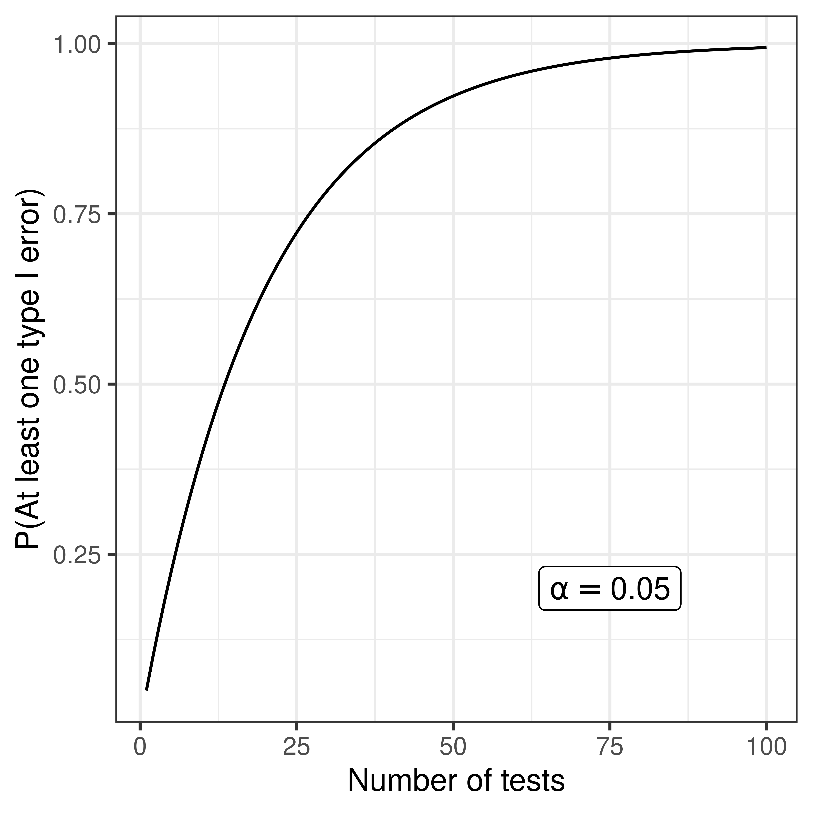

| Accept H0 | Reject H0 | |
| H0 is true | Type I error, false alarm | |
| H0 is false | Type II error, miss |
| Accept H0 | Reject H0 | |
| H0 is true | TN | FP |
| H0 is false | FN | TP |
Significance level
\[P(\mbox{reject }\,H_0 | H_0 \,\mbox{is true}) = P(\mbox{type I error}) = \alpha\]
Statistical power
\[P(\mbox{reject } H_0 | H_1 \mbox{ is true}) = P(\mbox{reject } H_0 | H_0 \mbox{ is false}) = 1 - P(\mbox{type II error})\]

To achieve a family-wise error rate of \(\leq \alpha\) when performing \(m\) tests, declare significance and reject the null hypothesis for any test with \(p \leq \alpha/m\).
Objections: too conservative
| H0 is true | H0 is false | |
| Accept H0 | TN | FN |
| Reject H0 | FP | TP |
The false discovery rate is the proportion of false positives among ‘hits’, i.e. \(\frac{FP}{TP+FP}\).
Benjamini-Hochberg’s method control the FDR level, \(\gamma\), when performing \(m\) independent tests, as follows:
Sometimes an adjusted significance threshold is not reported, but instead ‘adjusted’ p-values are reported.
Using Bonferroni’s method the ‘adjusted’ p-values are:
\(\tilde p_i = \min(m p_i, 1)\).
A feature’s adjusted p-value represents the smallest FWER at which the null hypothesis will be rejected, i.e. the feature will be deemed significant.
Benjamini-Hochberg’s ‘adjusted’ p-values are called \(q\)-values:
\(q_i = \min(\frac{m}{i} p_i, 1)\)
A feature’s \(q\)-value can be interpreted as the lowest FDR at which the corresponding null hypothesis will be rejected, i.e. the feature will be deemed significant.
Example 2 10000 independent tests (e.g. genes)
| p-value | adj p (Bonferroni) | q-value (B-H) |
|---|---|---|
| 1.7e-08 | 0.0002 | 0.0002 |
| 5.8e-08 | 0.0006 | 0.0003 |
| 3.4e-07 | 0.0034 | 0.0011 |
| 9.1e-07 | 0.0091 | 0.0020 |
| 1e-06 | 0.0100 | 0.0020 |
| 2.4e-06 | 0.0240 | 0.0040 |
| 2.3e-05 | 0.2300 | 0.0329 |
| 3.6e-05 | 0.3600 | 0.0450 |
| 0.00022 | 1.0000 | 0.2300 |
| 0.00023 | 1.0000 | 0.2300 |
| 0.00073 | 1.0000 | 0.6636 |
| 0.0032 | 1.0000 | 1.0000 |
| 0.0045 | 1.0000 | 1.0000 |
| 0.0087 | 1.0000 | 1.0000 |
| 0.0089 | 1.0000 | 1.0000 |
| 0.012 | 1.0000 | 1.0000 |
| 0.014 | 1.0000 | 1.0000 |
| 0.045 | 1.0000 | 1.0000 |
| 0.08 | 1.0000 | 1.0000 |
| 0.23 | 1.0000 | 1.0000 |